Brand systems · Custom web · Quiet growthEst. Worldwide
Crafted,not generated.
Kreator builds high-end brand identities, custom websites and sustainable growth systems for digital nomads, adventure creators and remote founders. We don't build for the algorithm — we build digital homes for people who measure success in freedom, depth and time spent outside.
Crafted not generatedHigh-end brandingCustom webGrowth systemsLess hustle more life
Manifesto
Stop chasing the algorithm.
01 — Why we exist
Most agencies want to keep you inside the hustle. Generic templates, automated content, metrics that matter only to machines. We build the opposite: quiet, rigorous, deeply crafted digital ecosystems for people who travel far, think slowly and refuse to compromise on quality.
Success isn't the hours you burn behind a screen. It's the freedom you keep, the depth of your impact, and the time you spend out in the wild.
Every project is led directly by a senior brand strategist — never handed to an account manager. A hand-picked guild of specialists assembles around your work, then dissolves.
We lay the structural roots of your brand — from deep strategic discovery to a cinematic, custom-built site that converts without ever looking corporate.
01Strategic positioning, narrative & tone of voice
Once the digital home is built, we keep the engine running quietly in the background while you're off-grid. Organic growth, clean content, ongoing care.
01Technical maintenance, speed & uptime care
02Content design, copywriting & campaign creative
03Organic promotion for sophisticated global audiences
04Quarterly strategy review & positioning tune-up
Workflow
Slow craft, in three moves.
03 — Discovery · Craft · Momentum
01
Step 01
Discovery & alignment
An unhurried, deep-dive strategic audit: your story, your values, your audience, the life you actually want the business to fund.
Strategic narrative discovery
Audience & competitor mapping
System architecture blueprint
02
Step 02
Deep craft & build
No templates, no automated shortcuts. Bespoke identity, typography and a custom site engineered for speed and feel.
Custom visual identity system
High-end Webflow / Showit build
Motion & conversion-focused UX
03
Step 03
Launch & momentum
We deploy with zero friction, then carry the load — speed, content, organic growth — so you can disappear into the mountains guilt-free.
Seamless technical launch
Ongoing maintenance & speed care
Organic promotion & copy curation
04
Always
One senior lead, start to finish.
You talk to the person doing the thinking. The guild forms around your project and dissolves when it ships — no bloat, no hand-offs.
You are never handed off to a junior account manager. Three senior partners carry the core of every project, and trusted specialists join for the parts that need them — then step back out.
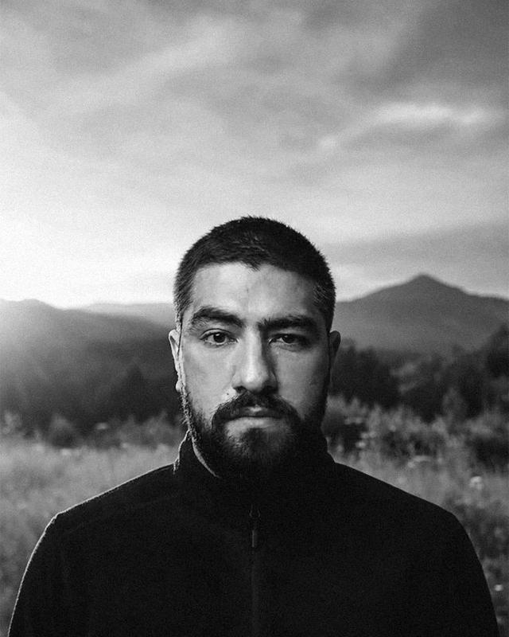
CD
Brand & product
Cătălin Dobrean
Sr. Brand Designer & Product Architect
Leads every engagement end to end — positioning, identity systems and the architecture of the site or product. The person you talk to is the person doing the thinking.
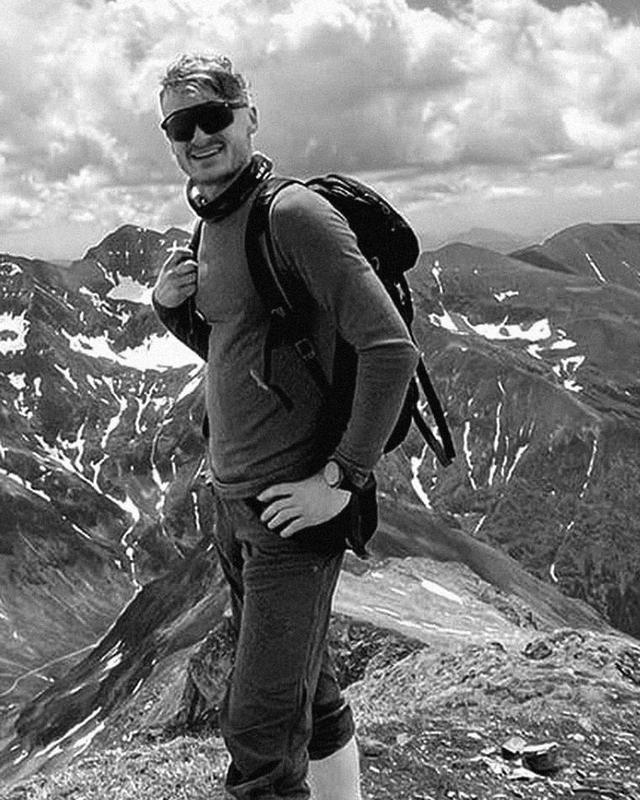
AK
Content & copy
Andrei Kalman
Content & Copy Creative Writer
Turns strategy into language — narrative, tone of voice, site and campaign copy that carries weight in sophisticated Western markets.
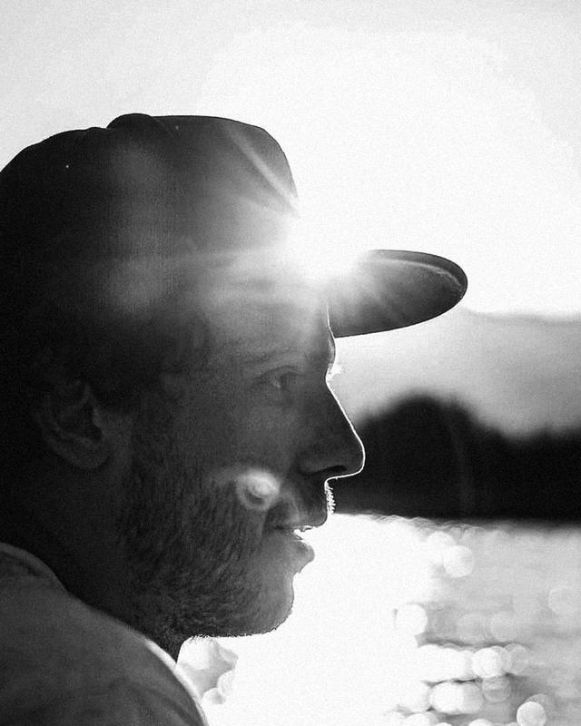
RR
Engineering
Robert Roman
Software & Web Developer
Builds it properly: clean front-end, sub-second loads and restrained motion, on Webflow, Showit or fully custom.
0Senior partners
0Account managers
0Custom, never templated
0Foundation projects taken
Limited intake
Let's build something quiet and powerful.
We take on a strictly limited number of Foundation projects each quarter, so every one gets full depth and attention. Tell us where you're headed.
A four-person adventure-film collective with festival-grade work and a brand that looked like a free template. We built the identity and the site that let them pitch outdoor brands instead of chasing them.
ClientAdventure-film collective
Year2025
EngagementFoundation + Momentum
BuildWebflow
The brief
What they came with
Meridian shoots in high alpine terrain — long approaches, bad weather, patient footage. The reel was landing festival slots, but everything around it was borrowed: a stock wordmark, four different colour treatments across four platforms, and a Vimeo link doing the work of a portfolio.
The problem was never quality. It was that nothing in their brand signalled the standard of the work, so every commercial conversation started from zero.
The work
What we made
A wordmark drawn from surveying and topographic marks — a language the crew already lived inside — with a fixed duotone grade that every still and frame is pushed through, so the body of work reads as one body of work.
The site is a single scroll: the reel plays full-bleed at the top, then each project opens as field notes — altitude, conditions, crew, kit — before it shows a single frame. It reads like the people who made it, not like a portfolio theme.
The reel was already good enough. The job was to stop the brand undercutting it.
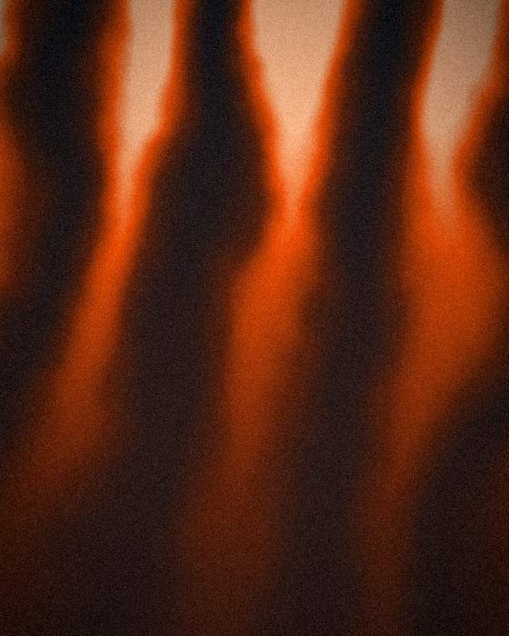
Grade study — dawn ridge, duotone pass 03
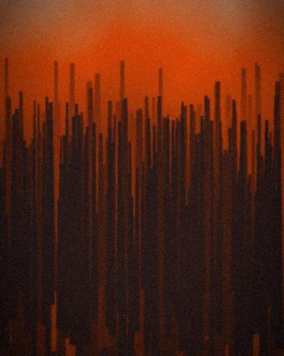
Frame test — long-exposure, low light
Palette
Base #0B1015
Slate #2A3440
Signal #EB4C03
Dust #C9B79A
Paper #F3EFE9
Delivered
Positioning and narrative platformDiscovery
Identity system and mark setCraft
Art direction and grading guideCraft
Webflow build, single scrollBuild
Ongoing edit and content careMomentum
These case studies are concept work, made to show how Kreator thinks. Live client
projects replace them as they ship.
A private network of remote founders run out of a Notion page and a Slack invite. We gave it an ecosystem quiet enough to feel exclusive and structured enough to grow.
ClientPrivate founder network
Year2025
EngagementFoundation + Momentum
BuildWebflow + member area
The brief
What they came with
Around three hundred founders, spread across fourteen time zones, held together by a shared doc and goodwill. Every new member arrived through a forwarded link and a personal vouch, which worked beautifully and did not scale at all.
They wanted to double without becoming another loud community brand — no cohort language, no countdown timers, no growth-hacking sheen.
The work
What we made
A restrained identity built on a constellation motif: individual points, real distance between them, connections that only appear when you look. It carries the idea of the network without ever drawing an actual network diagram twice.
The ecosystem is three surfaces on one system — a public page that explains almost nothing on purpose, an application that reads as an invitation rather than a form, and a member area with a directory, a quiet events rail and a fortnightly letter.
Exclusivity is a design problem. Say less, and mean all of it.
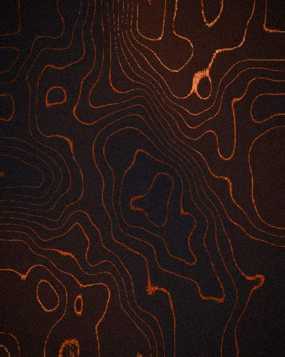
Contour study — density map of member locations
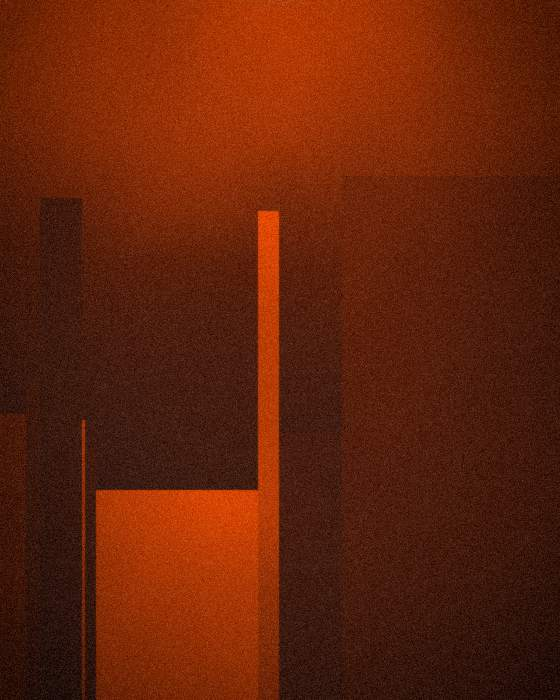
Structure test — directory grid at three widths
Palette
Void #080C11
Deep #1B2430
Signal #EB4C03
Steel #6E7B8A
Bone #EDEAE4
Delivered
Positioning and membership propositionDiscovery
Identity and mark systemCraft
Application and onboarding flowCraft
Public site and member area buildBuild
Letter, events and directory upkeepMomentum
These case studies are concept work, made to show how Kreator thinks. Live client
projects replace them as they ship.
An architecture studio building low-impact houses in the Carpathians, with a portfolio trapped in PDFs. We gave the work the editorial treatment it already deserved.
ClientArchitecture studio
Year2026
EngagementFoundation
BuildWebflow
The brief
What they came with
Terra Alta had eleven finished houses, a decade of drawings and a site that reduced all of it to three thumbnails and a contact form. Clients were arriving through word of mouth and then being asked to imagine the rest.
The studio also had a genuine constraint most practices only claim: every house is built from what the site and the region can give it. That needed to be structural in the brand, not a sustainability badge in the footer.
The work
What we made
An architectural type scale — one measure, held everywhere — and a layout system where drawings and photography carry equal weight. Plans and sections are not supporting material here; they open the project.
Each house gets an editorial page with a materials index: what it is made of, where each material came from, how far it travelled. The constraint became the most interesting page on the site.
If the constraint is real, put it in the layout — not in a badge.
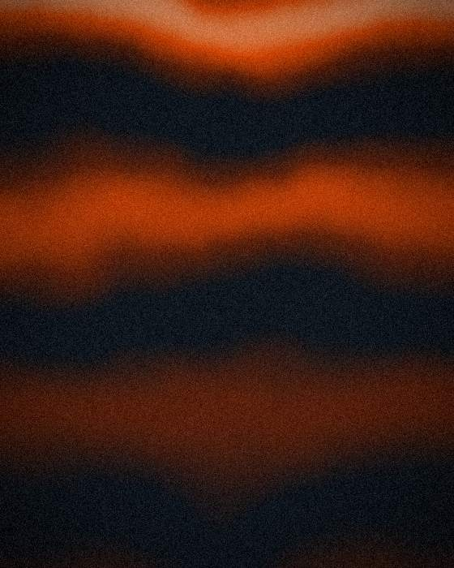
Volume study — massing rhythm, west elevation
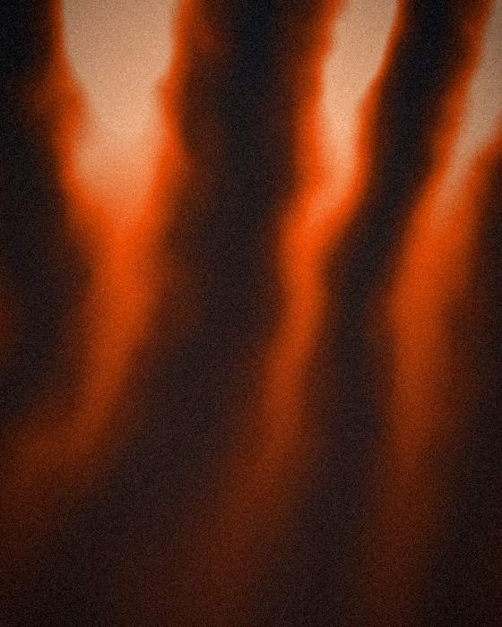
Light study — interior, late afternoon
Palette
Char #12100E
Timber #3A2E25
Ember #E4571E
Clay #B79E7E
Lime #F1ECE3
Delivered
Positioning and studio narrativeDiscovery
Identity and editorial type systemCraft
Project page and materials index designCraft
Webflow build with house CMSBuild
Handover, training and documentationBuild
These case studies are concept work, made to show how Kreator thinks. Live client
projects replace them as they ship.
Three off-grid cabins, a wood-fired sauna and a waiting list living in a spreadsheet. We built the brand and the booking flow that turned interest into nights.
ClientOff-grid retreat
Year2026
EngagementFoundation + Momentum
BuildShowit + booking
The brief
What they came with
Guests were finding Wildland through a friend or a saved post, then emailing to ask if a weekend in October was free. Someone answered those emails by hand, sometimes two days later. Most people did not wait.
The place itself does the selling — fog in the valley at six in the morning, no signal, a stove you have to feed. None of that survived the trip to the website.
The work
What we made
A brand rooted in the site rather than the category: seasonal art direction with four distinct grades, a mark that reads as both a ridge and a roofline, and copy written in the register of someone who actually lives there.
Booking takes three taps — dates, cabin, confirm — with live availability and a deposit held at the first step. The waiting list moved out of the spreadsheet and into something that answers instantly at two in the morning.
The place was never the problem. The two-day reply was.
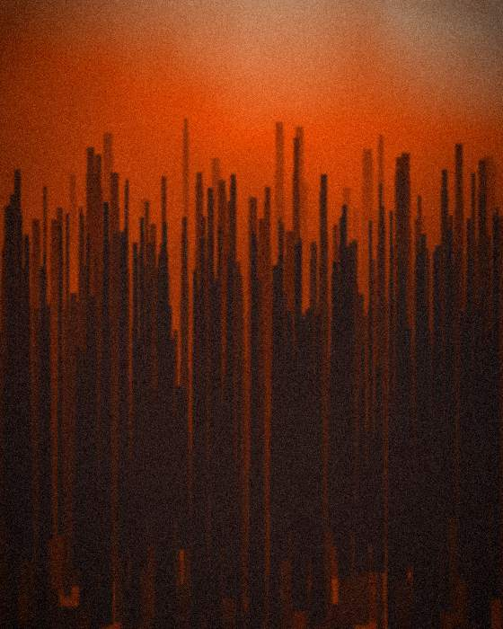
Season study — autumn canopy, morning fog
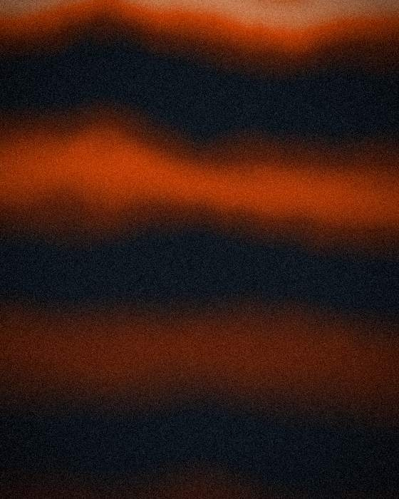
Atmosphere test — valley mist, blue hour
Palette
Peat #0A0F0C
Moss #1E2A22
Ember #E9540C
Lichen #8FA08F
Ash #F0EDE6
Delivered
Positioning and guest narrativeDiscovery
Identity and seasonal art directionCraft
Booking flow design and copyCraft
Showit build with live availabilityBuild
Seasonal content and campaign careMomentum
These case studies are concept work, made to show how Kreator thinks. Live client
projects replace them as they ship.